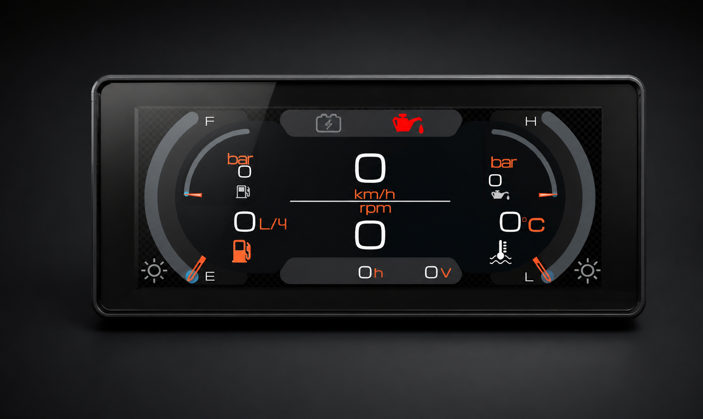

Base interface
GPS speed and engine rpm in the centre, fuel consumption on the left, coolant temperature on the right. Fuel level and temperature on the side arcs, engine hours and onboard voltage at the bottom.
Configurable instrument panel for airboats and special-purpose vessels, combining readability, diagnostics and system status in a single marine-adapted display.

Dash-6.8 is the instrument panel of the AILUOHAI system. It reads engine data over CAN and shows it on one 6.8" screen: speed, rpm, temperatures, pressures, fuel and engine hours. A built-in GPS gives the speed, and Wi‑Fi with an onboard web server is used for setup and updates.
Scroll through the screens of Dash-6.8 — from the main view to warnings and live data.
GPS speed and engine rpm in the centre, fuel consumption on the left, coolant temperature on the right. Fuel level and temperature on the side arcs, engine hours and onboard voltage at the bottom.
When the engine control unit reports a fault, the CHECK sign appears in the centre of the screen.
The oil can icon in the top bar turns red when oil pressure drops below the limit.
The battery icon turns orange when the onboard voltage is too low.
The temperature icon turns red when the engine overheats.
The temperature icon stays blue until the engine has warmed up.
Important warnings come with a yellow sign in the centre of the screen, so they are hard to miss.
A second screen with live values: rpm, intake pressure, ignition angle, knock correction, injection time, lambda, pedal and throttle, coolant, intake, oil and gearbox temperatures, oil and fuel pressure, consumption and voltage.
How the panel is built for water, vibration and cold.
A 1280×480 IPS display with a 170° viewing angle and brightness up to 450 cd/m², working down to −30 °C. Rigid plastic enclosure with one sealed 14-pin connector on the back; the housing can be made fully sealed.
All parts are assembled with stainless A2 fasteners. A vent valve releases vapour and keeps moisture out of the housing. The panel is designed for overloads up to 4 G.
One sealed 14-pin connector: power, CAN, analog and digital inputs, sensor supply and a switched 12 V output. Interactive pinout with the description of every pin.